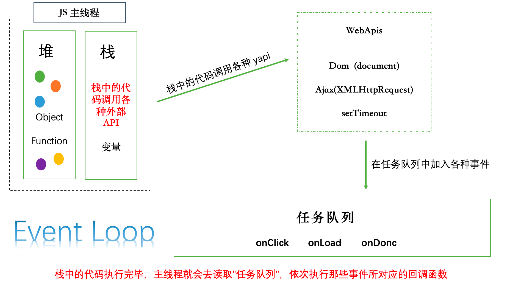
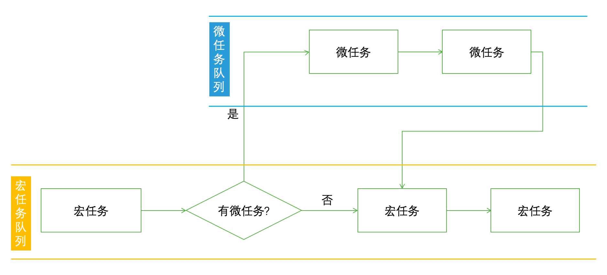
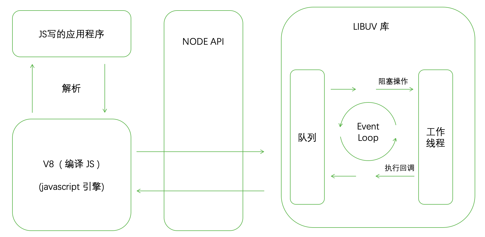
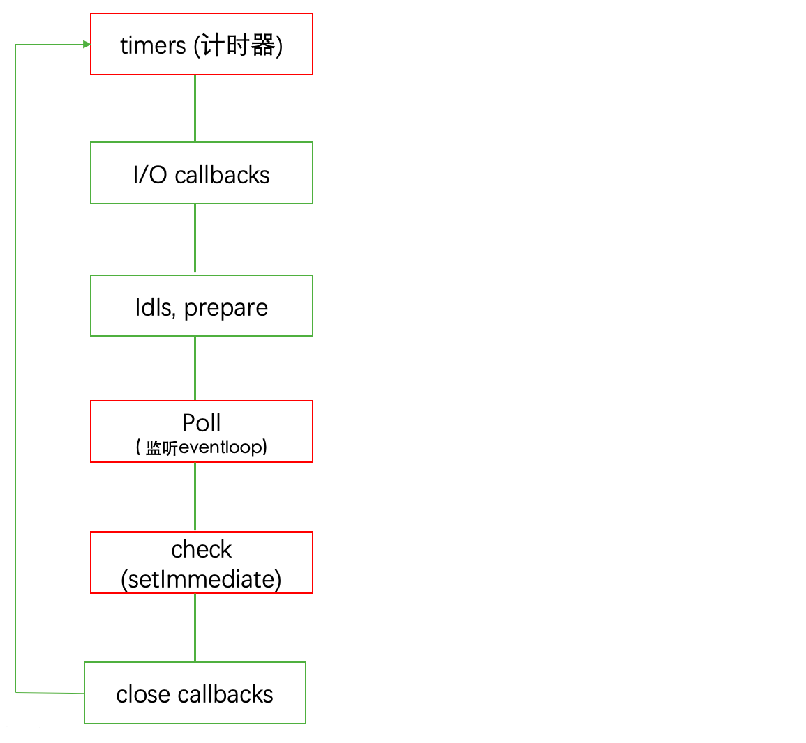

# EventLoop
js 引擎执行异步代码而不用等待，是因有为有
消息队列和事件循环。消息队列：消息队列是一个先进先出的队列，它里面存放着各种消息。 只要指定过回调函数，这些事件发生时就会进入"任务队列(消息队列)"，等待主线程读取。事件循环：事件循环是指主线程重复从消息队列中取消息、执行的过程。
同步任务和异步任务同步任务指的是: 在主线程上排队执行的任务，只有前一个任务执行完毕，才能执行后一个任务异步任务指的是: 不进入主线程、而进入"任务队列"（task queue）的任务，只有"任务队列"通知主线程，某个异步任务可以执行了，该任务才会进入主线程执行
异步执行的运行机制- 所有
同步任务都在主线程上执行，形成一个执行栈（execution context stack）。 - 主线程之外，还存在一个
"任务队列"（task queue）。只要异步任务有了运行结果，就在"任务队列"之中放置一个事件。 - 一旦
"执行栈"中的所有同步任务执行完毕，系统就会读取"任务队列"，看看里面有哪些事件。那些对应的异步任务，于是结束等待状态，进入执行栈，开始执行。 - 主线程不断重复上面的第三步。
- 注:
只要主线程空了，就会去读取"任务队列"，这就是JavaScript的运行机制。这个过程会不断重复。
- 所有
# 浏览器中的 eventLoop

- 任务队列分类: 宏任务队列和微任务队列
- 有同步任务先执行同步任务
- 若同步任务中有微任务，则执行完同步任务，在执行微任务
- 以上都执行完后, 在执行宏任务
- 若宏任务中有微任务, 则先执行宏任务, 在执行宏任务中的微任务(微任务执行完成后, 在执行宏任务)
- 执行
宏任务的顺序是先进先出
浏览器中的任务队列
- 宏任务
scriptsetTimeoutsetIntervalrequestAnimationFrame
- 微任务
Promie(async)MutationObserver
- 宏任务
经典案例
宏任务和微任务的执行顺序
// 宏任务队列: setTimeout // 微任务队列: Promise setTimeout(() => { console.log('setTimeout') }, 0) const promise = new Promise(resolve => { console.log('init'); resolve(1); console.log('end'); }); promise.then(res => { console.log('result', res); }) // 结果: 同步: init end 微任务: r 1 宏任务: setTimeout宏任务微任务交错执行
setTimeout(() => { console.log('timeout1'); Promise.resolve().then(() => { console.log('promise1'); }) },0); Promise.resolve().then(() => { console.log('promise2'); setTimeout(() => { console.log('timeout2'); }, 0) }) // 结果: promise2 timeout1 promise1 timeout2async await 拆解
- 如果 await 后是一个简单的类型, 则进行 promise 包装
- 如果 await 后是一个 thenable 对象，则不用进行 Promise 包裹 (chrome 的优化)
- 若 return 后面没有await, 直接是 thenable 对象, 也会当成 promise.then() 处理
async function fn(){ return await 1234; // 等价于 // return Promise.resolve(1234) } fn().then(res => console.log('简单类型', res)); // 结果: 简单类型1234async function fn(){ return { then(resolve){ resolve({ then(r){ // 遇到 thenable 会递归使用 promise.then // 直到 resolve 返回值是一个基础类型 r(1); } }) } } } fn().then(res => console.log('thenable 对象', res)); // 结果: thenable 对象1使用 async await 顺序判断
(将 async await 转换成我们熟悉的 promise)async function async1(){ console.log('async1 start'); // 下面2行 可转换 为下面注释的 await async2(); // await 后面跟的是 promise 对象。 resolve 的值没有返回, 是一个 undefind。 console.log('async1 end'); // new Promise(resolve => { // console.log('async2'); // resolve(); // }).then(res => console.log('async1 end')); } async function async2(){ console.log('async2'); } // 入口 async1(); console.log('script'); // 结果: async1 start - async2 - script - async1 end如果 promise 没有resolve 或者 reject
async function async1(){ console.log('async1 start'); await new Promise(resolve => { // new Promise 在构造函数中, 同步执行 console.log('promise1'); // 没有执行 resolve() 方法, 后果是导致 promise 永远没有完成 // 以至于 await 下面的函数永远不会执行。 }) console.log('async1 success'); return 'async1 end' } console.log('srcipt start'); async1().then(res => console.log(res)) console.log('srcipt end'); // 结果: srcipt start - async1 start - promise1 - srcipt end // 若有 resolve(), 结果为 srcipt start - async1 start - promise1 - srcipt end - async1 success - async1 end测试题
async function async1(){ console.log("async1 start"); await async2(); // 等一下，在下一个微任务中执行下面的log console.log('async1 end'); // 相当于上一个 promise 中的 then } async function async2(){ // async 方法会包裹一个 promise console.log("async2"); } console.log("script start"); setTimeout(function(){ console.log('setTimeout'); }, 0); async1(); new Promise(function(resolve){ console.log('prommise1'); resolve(); }) .then(function(){ console.log('prominse2') }) .then(function(){ console.log('prominse3') }) .then(function(){ console.log('prominse4') }) console.log('script end'); // 执行结果 // 第一轮宏任务 script start async1 start async2 prommise1 script end // 微任务队列 async1 end prominse2 prominse3 prominse4 // 第二轮宏任务 setTimeout测试题2
async function async1(){ console.log('async1 start'); return new Promise(resolve => { resolve(async2()); // 由于 async2 函数没有返回值，所以 resolve 为 undefind }).then(() => { console.log('async1 end'); }) } function async2(){ console.log('async2'); } setTimeout(function(){ console.log('setTimeout'); }, 0); async1(); new Promise(function(resolve){ console.log('promise1'); resolve(); }) .then(function(){ console.log('promise2'); }) .then(function(){ console.log('promise3'); }) .then(function(){ console.log('promise4'); }) // 结果 async1 start async2 promise1 async1 end promise2 promise3 promise4 setTimeou测试题2(改动)
// resolve 处理 thenable, 也会包裹一层 promise。 // 普通的 function async2 // return thenable 的 async2 // async 的 async2 async function async1(){ console.log('async1 start', 1); return new Promise(resolve => { // resolve 处理 thenable 也会在包裹一层 promise。所以向下移动2个 resolve(async2()); // resolve 的是一个 promise, 每个 promise 是一个 thenable 对象。 }).then(() => { console.log('async1 end', 4); }) } // async 函数默认返回一个包裹的 promise async function async2(){ //async2 函数添加加一个 async console.log('async2', 2); // 自己是个 promise } // 若改动为, 返回 thenable 对象, 则向下移动一位。 function async2() { console.log('async2', 2); return {then(r){r()}}; // return 1; // 若返回一个基本类型, 则和之前一样 } setTimeout(function(){ console.log('setTimeout', 8); }, 0); async1(); new Promise(function(resolve){ console.log('promise1', 3); resolve(); }) .then(function(){ console.log('promise2', 5); }) .then(function(){ console.log('promise3', 6); }) .then(function(){ console.log('promise4', 7); }) // 添加 async 的结果 async1 start 1 async2 2 promise1 3 promise2 5 promise3 6 async1 end 4 // 改变了。。。。 promise4 7 setTimeou 8 // 返回 thenable 的结果 async1 start 1 async2 2 promise1 3 promise2 5 async1 end 4 // 改变了。。。。 promise3 6 promise4 7 setTimeou 8
# nodeJS中的 eventLoop
下图理解
- V8引擎解析JavaScript脚本。
- 解析后的代码，调用Node API。
- libuv库负责Node API的执行。它将不同的任务分配给不同的线程，形成一个Event Loop（事件循环），以异步的方式将任务的执行结果返回给V8引擎。
- V8引擎再将结果返回给用户。 
nodejs的
event loop分为6个阶段，它们会按照顺序反复运行，分别如下：timers：执行setTimeout() 和 setInterval()中到期的callback。I/O callbacks：上一轮循环中有少数的I/Ocallback会被延迟到这一轮的这一阶段执行idle, prepare：队列的移动，仅内部使用poll：最为重要的阶段，执行I/O callback，在适当的条件下会阻塞在这个阶段check：执行setImmediate的callbackclose callbacks：执行close事件的callback，例如socket.on("close",func) 
Nodejs 中的任务队列
- 宏任务
setTimeoutsetIntervalsetImmediateIO
- 微任务
Promise(async)process.nextTick(在每一个阶段切换的时候执行, 并且优先级大于Promise)
- 宏任务
比较
setImmediate和setTimeout的执行顺序- 案例一
setTimeout(_ => console.log('setTimeout')); setImmediate(_ => console.log('setImmediate')); // 结果: 不固定- 在执行完
poll之后, 看timers里面是否有内容, 有内容则执行timers, 执行完在执行check。
- 在执行完
- 案例二
- 如果两者都在一个 poll 阶段注册, 那么执行顺序就能确定
const fs = require('fs'); fs.readFile('./index.html', () => { setTimeout(_ => console.log('setTimeout')); setImmediate(_ => console.log('setImmediate')); }) // 结果: setImmediate - setTimeout // 原因 poll 阶段注册时, timers 里面还没有内容, 所以要先执行check。
- 案例一
理解
process.nextTick每一个阶段执行完成后, 在当前阶段末尾触发 nextTick- 案例: 常见的 nodeJs 回调函数第一个参数, 都是抛出的错误
function apiCall(arg, callback) { if(typeof arg !== 'string'){ // 抛出错误，也会执行回调 return process.nextTick( callback, new TypeError('argument shold be string'); ); } }比较
process.nextTick和setImmediate- process.nextTick() 在同一个阶段尾部立即执行
- setImmediate() 在事件循环的 check 阶段触发。
setTmmediate(() => { // check 阶段执行 console.log('setTmmediate'); }); process.nextTick(() => { // 每一个阶段开始之前，都会执行nextTick console.log('nextTick'); }) // 结果: nextTick - setTmmediate (上面的代码在 poll 中执行的时候)
# 不同 Node 版本中的 EventLoop
Node11 版本之前
- 一旦执行一个阶段, 会先
将这个阶段里的所有宏任务执行完成之后, 才会执行该阶段剩下的微任务
- 一旦执行一个阶段, 会先
Node11 版本之后 (和浏览器行为保持一致)
一旦执行一个阶段里的一个宏任务, 就立刻执行对应的微任务队列。
案例一: timeout 阶段的变化
setTimeout(() => {
console.log('timer1');
Promise.resolve().then(function(){
console.log('promise1');
})
})
setTimeout(() => {
console.log('timer2');
Promise.resolve().then(function(){
console.log('promise2');
})
})
// node 大于 11版本的结果:
timer1
promise1
timer2
promise2
// node 小于 11版本的结果:
timer1
timer2
promise1
promise2
- 案例二: check 阶段的执行时机变化
setImmediate(() => console.log('immediate1'));
setImmediate(() => {
console.log('immediate2');
Promise.resolve().then(() => console.log('promise resolve'));
});
setImmediate(() => console.log('immediate3'));
setImmediate(() => console.log('immediate4'));
// node 大于 11版本的结果:
immediate1
immediate2 // 在执行某一个宏任务的时候，要先将当前阶段的微任务执行完成后，在执行下一阶段的宏任务
promise resolve
immediate3
immediate4
// node 小于 11版本的结果:
immediate1
immediate2
immediate3
immediate4
promise resolve
- 案例三: nextTick 队列的执行时机变化
setImmediate(() => console.log('timeout1'));
setImmediate(() => {
console.log('timeout2');
promise.nextTick(() => console.log('next tick'))
});
setImmediate(() => console.log('timeout3'));
setImmediate(() => console.log('timeout4'));
// node 大于 11版本的结果:
timeout1
timeout2
timeout3
timeout4
next tick
// node 小于 11版本的结果:
timeout1
timeout2
next tick
timeout3
timeout4